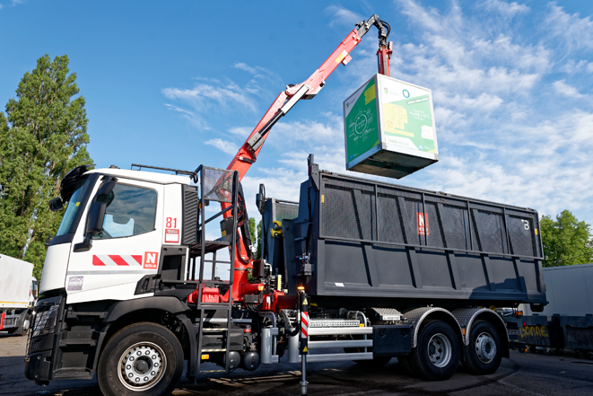

Des véhicules plus performants pour le ramassage de vos déchets
Une flotte de véhicules de collecte renouvelée.
La flotte de véhicules de collecte des déchets de la CALL a été entièrement renouvelée. Nicollin, prestataire de la CALL pour la collecte des déchets et la gestion des déchèteries, a investi dans l’achat de 13 bennes pour une collecte latérale robotisée, 11 bennes à chargement arrière, 6 mini bennes, 3 bennes pour les encombrants, 6 véhicules Ampirolls pour les déchèteries, 4 camions grue pour la collecte des bornes d'apport volontaire, 10 véhicules légers et 1 grue pour l'exploitation de la déchèterie de Pont-à-Vendin.
Ces équipements, plus performants et respectueux de l’environnement, vont permettre d’améliorer la qualité du service et renforcer la sécurité des personnels et des usagers. Tous les véhicules de collecte sont de plus équipés d’un système de géolocalisation, ce qui va permettre de suivre le bon déroulement des collectes, d’apporter des réponses concrètes et précises aux usagers et d’adapter les tournées de collecte en conséquence.
L’ancien parc de véhicules de collecte est progressivement retiré de la circulation et sera entièrement recyclé.
Ces investissements en matériel d’exploitation s’élèvent à 8 millions d’euros.
Quand vos déchets sont collectés ?
Bien trier vos déchets
